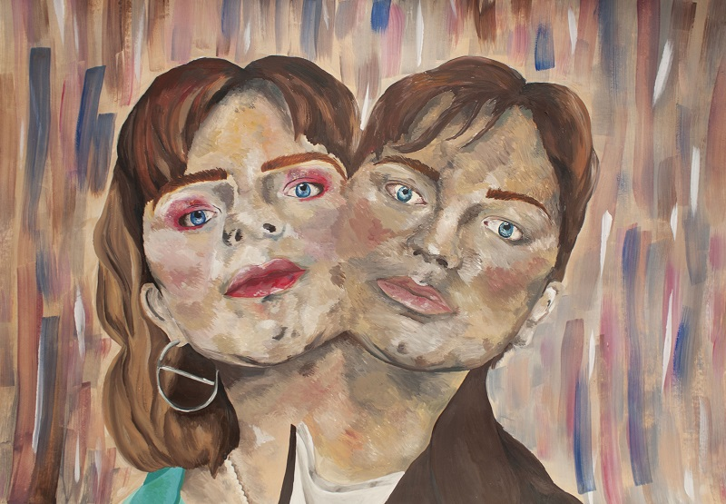

Gallery
Welcome to my 2D art portfolio! Below are some of my artworks:



Welcome to my 2D art portfolio! Below are some of my artworks:
Hello. My name is Rhea Stacey and I am a 2D artist with a passion for quirky yet intricate illustrations. Art has been my strongest passion since I was a child, and through the years developing my craft I have discovered my love for monochrome pen work. I also work with a variety of paints, my favourites being acrylic and gouache. My artistic journey has led me to discover my deep love for drawing botanical and natural illustrations, as well as expressing the emotions and stories of individuals through portraiture. I focus less on realism, and often let my imagination guide my work. As an aspiring illustrator, I have grand dreams of bringing magical worlds to life through my art. My ultimate aspiration is to illustrate captivating stories that transport readers to realms of wonder, where imagination knows no bounds. I thrive on creative challenges, constantly experimenting with various mediums and styles to broaden my artistic horizons. My dedication to continuous improvement and my willingness to embrace new techniques have allowed me to develop versatility in my craft. In my spare time, I enjoy collecting inspiration from nature, I am a novice forager, and enjoy the spiritual side of life. For me, art isn't just a career; it's an integral part of who I am. I'm driven to share my creative visions with the world and leave an indelible mark on the hearts of art enthusiasts.
If you'd like to get in touch with me or discuss a potential collaboration, please feel free to contact me: